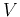

A generic system with input (stimulus, cause)  and output (response,
effect) can be described mathematically as a function .
The function is linear if it satisfies the following:
and output (response,
effect) can be described mathematically as a function .
The function is linear if it satisfies the following:
When the system is linear, the superposition principle applies:
When there exist multiple energy sources, the currents and voltages in the circuit can be found as the algebraic sum of the corresponding values obtained by assuming only one source at a time, with all other sources turned off:
As superposition principle only applies to linear functions, it cannot be applied to nonlinear functions such as power (e.g., or ).

However, note that superposition principle does not apply to any variable
nonlinearly related to the energy sources, such as power:
Example 1: The previous example can also be solved by superposition theorem.

First, we turn the voltage source of 20V off (short-circuit with 0V), and get
Example 2: Find voltage  and current  .
.

First, we solve this problem using node-voltage method. Assume the currents
(left branch), and (right branch) all leave the top node,
where the voltage is (with respect to the bottom treated as ground).
By KCL, we have

Next, using superposition theorem, we get
In principle, all currents and voltages of an arbitrary network of linear components and voltage/current sources can be found by either the loop current method or the node voltage method.
However, if only the current and/or voltage associated with one specific component are of interest, it is unnecessary to find voltages and currents elsewhere in the circuit. The methods considered below can be used in such situations.
Any one-port (two-terminal) network of resistance elements and energy
sources is equivalent to an ideal voltage source  in series with a
resistor
in series with a
resistor  , where
, where

If we are only interested in finding the voltage across and current  through a particular component in a complex circuit containing resistors,
voltage and current sources, we can use Thevenin's theorem to ``pull'' the
component out and treat it as the load
through a particular component in a complex circuit containing resistors,
voltage and current sources, we can use Thevenin's theorem to ``pull'' the
component out and treat it as the load  of the rest of the circuit
treated as a voltage source , and then find the and
of the rest of the circuit
treated as a voltage source , and then find the and  at
its output port.
at
its output port.
Proof:

Let the voltage and current associated with the output port of the
network be and  , respectively.
, respectively.
Any one-port (two-terminal) network of resistance elements and energy
sources is equivalent to an ideal current source  in parallel with a
resistor , where
in parallel with a
resistor , where
Proof: The proof of this theorem is in parallel with the proof of
Thevenin's theorem. Again, assume with the load  the network's
terminal voltage and current are and
the network's
terminal voltage and current are and  , respectively.
, respectively.

Of course, the Norton's theorem can also be easily proven by converting
Thevenin's equivalent circuit of an ideal voltage source in
series with a resistance  to an equivalent circuit of an ideal current
source
in parallel with a resistance .
to an equivalent circuit of an ideal current
source
in parallel with a resistance .
Load Line and Output Resistance
Due to Thevenin's and Norton's theorems, any one-port network of
resistors and energy sources can be converted into a simple voltage or
current source with an internal or output resistance  . Moreover,
the relationship between the voltage across and the current
. Moreover,
the relationship between the voltage across and the current  through the load is a straight line referred to as the load line.
The absolute value of the slope
of the
load line is the internal or output resistance of the network, as shown
in the figure below. On the other hand, the resistance
through the load is a straight line referred to as the load line.
The absolute value of the slope
of the
load line is the internal or output resistance of the network, as shown
in the figure below. On the other hand, the resistance  , which
can be considered as the input resistance of the load, can also be
represented on the graph as a straight line with its slope
. The intersection of these two straight
lines indicates the actual voltage and current
, which
can be considered as the input resistance of the load, can also be
represented on the graph as a straight line with its slope
. The intersection of these two straight
lines indicates the actual voltage and current  with the load
with the load
 .
.

The output resistance  of a network can also be determined
experimentally by varying the load
of a network can also be determined
experimentally by varying the load  . Assume are
associated with load
. Assume are
associated with load  and with load
and with load  , then
the output resistance of the source network can be found to be:
, then
the output resistance of the source network can be found to be:
To show this, we assume the source network is converted to a voltage
source with  and
and  , and use two different loads
, and use two different loads  and
and
 with
with
Consider two extreme cases for the two loads  and
and  :
:
Example:

Also note that the Thevenin's voltage source and the Norton's current source can be converted into each other:

The configuration can be converted to and vice versa. We
relate the and by realizing that the resistance
between terminals a and b of should be equal to that between the
same two terminals of :
Given , and of a , the three equations
can be solved for , and of the corresponding . For
example, subtracting the 3rd equation from the sum of the first two, we
get expression for . The solutions are:
Reversely, given , and of a , the same three
equations can also be solved for , and of
the corresponding to get:
The top circuit in the following figure can be converted into either of the two equivalent circuits below.

The formed by  ,
,  , and
, and  can
be converted to a Y, which can then be combined with to get
a Y (bottom left) with:
can
be converted to a Y, which can then be combined with to get
a Y (bottom left) with:
Example 0: (Homework)
The conversion from to is more useful as is easier to analyze than . For example, the circuit in (a) below can be converted to that in (b) to find all the currents in the circuit:

Assume , , , ,
 , , , find the currents
, , ,
, , , find the currents
, , ,  , , and .
, , and .
Example 1:
In the circuit below, ,
,
 , . Find the value of current
, . Find the value of current  when
is ,
when
is ,  , and . Moreover, find the value for
for the desired current
, and . Moreover, find the value for
for the desired current  .
.

Method 1, conversion
Find  when . First convert the composed of
when . First convert the composed of
 ,
,  and into a composed of , and :
and into a composed of , and :

Method 2, Thevenin's theorem
Solve the problem using Thevenin's theorem by the following steps:
Specifically, we remove as the load of a network composed of all other
resistors  ,
,  , , and the voltage source , then
apply Thevenin's theorem to find the open-circuit voltage between the two
terminals a and b:
, , and the voltage source , then
apply Thevenin's theorem to find the open-circuit voltage between the two
terminals a and b:
Example 2: The circuit below, often used in some control system,
is composed of two voltages, two potentiometers, and a load resistor.
Assume:
We denote the current through by , and the voltage at the left
and right ends of  by and , respectively, with respect to
the bottom wire treated as the ground.
by and , respectively, with respect to
the bottom wire treated as the ground.

Method 1, Superposition theorem
Find caused by voltage , and then  caused by voltage
, then get
.
caused by voltage
, then get
.
Method 2, Thevenin's theorem
Remove  , find open-circuit voltage
and equivalent
resistance
, find open-circuit voltage
and equivalent
resistance  , then find
.
, then find
.